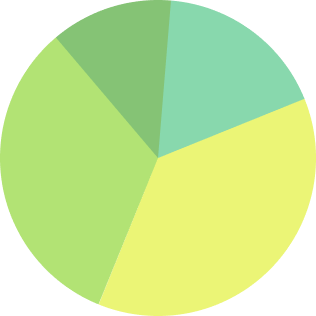
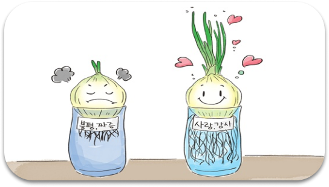

양파 실험에 대해 아시나요?
양파 실험은 “ 좋은 말 나쁜 말 양파 실험” 이라는 이름으로 불리기도 합니다. 양파를 기를 때 한 쪽 양파에는 “사랑해”, “고마워”, ”미안해”와 같은 좋은 말들을 해주고 , 다른 쪽 양파에는 “너 싫어”, “바보”, “멍청이” 와 같은 부정적인 말들을 해 주며 기릅니다. 이후 양파가 다 자랐을 때를 비교하는데, 이 때 좋고 긍정적인 말들을 해 준 양파는 크게 자라고 나쁜 말과 같은 부정적인 말들을 해 준 양파는 작게 자란 것을 확인할 수 있습니다. 이 실험을 통해 우리는 말에는 힘이 있다는 사실을 다시금 깨닫게 됩니다.
한국인의 욕설 사용 정도는 얼마나 될까요?
2020년 국립국어원에서 실시한 국민의 언어 의식 조사보고서에 따르면,일상 생활 속 욕설 사용에 대해 묻는 문답에서 우리 국민의 46.9%가 욕설을 사용하는 것으로 나타났습니다. 이는 우리 국민 10명 중 5명이 욕설을 사용하는 것입니다.
넌 양파 당근같은 옥수수감자야는
저희 넌 양파 (넌 양파 당근같은 옥수수감자야) 의 이름은 욕설이 들어간 문장을 변환하였을 때의 결과를 사용한 것입니다. 저희는 양파 실험을 배경으로 하여 언어 사용의 중요성에 대해 알려주는 지식제공 웹사이트입니다. 양파 실험의 결과를 보여주고, 욕설이 들어간 문장을 변환해주는 기능을 가지고 있으며 언어 사용의 위험성에 대해 서비스합니다.
| 문장에서 특정 욕을 채소로 변환합니다. |
| 양파 실험을 인터넷 상에서 체험합니다. |
| 언어의 위험성에 대한 정보를 얻습니다. |
| 넌 양파 | Home |
|
| e-mail: w2215@e-mirim.hs.kr | w2203@e-mirim.hs.kr | ||
| 주소 : 서울특별시 관악구 대학동 호암로 546, 미림여자정보과학고등학교 | 이용 약관 | |
| 전화 : 02 - 0000 - 0000 | ||
| 팩스: 02 -000 - 000 | FAQ |